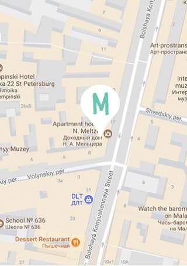

Милые штуки ручной работы для дома
Вязаные корзинки
Товар недели
Экологически чистая пряжа, ручная работа. Доступны в шести расцветках и трёх размерах.
- Цвет:
- тиффани/серый
- Диаметр
- 25 см
- Высота:
- 15 см
Коротко о нас:
Экологически чистые материалы
Скандинавский стиль по российской цене
Увеличивает лайки на фотографиях
Связано вручную с любовью и умилением
Поддержка отечественного производителя
Поставляется в подарочной упаковке
Отзывы
Контакты
e-mail:
info@mimimishkashop.ruадрес:
г. Санкт-Петербург ул. Большая Конюшенная д. 19/8, офис 101

Напишите нам